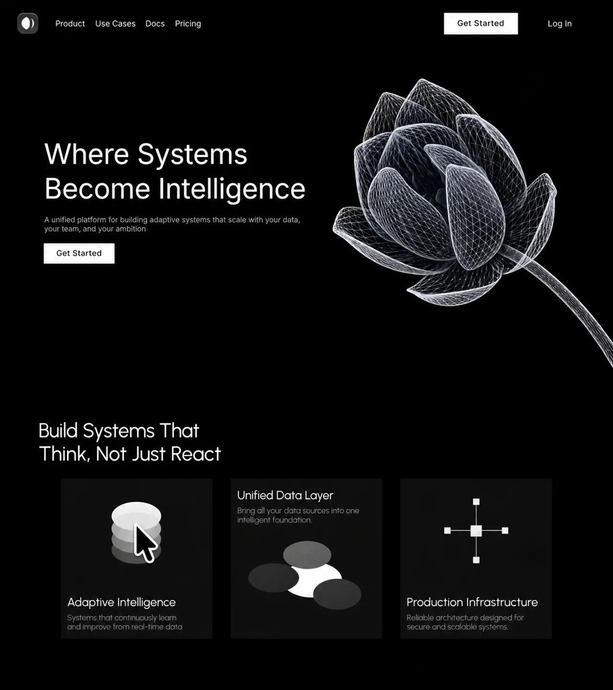

Systema
SaaSsaasyilai-ai 公开页面
收录时间：2026-08-14正文：10,930 字符

本地预览图 · jpeg
完整提示词
## Recreate this page
Single static landing page: `index.html` + local fonts. Black, minimal, two full-viewport sections. No frameworks.
### Assets / fonts
- **Inter** (hero): `assets/fonts/inter-400.woff2`, `inter-500.woff2` (and 600 if present), `font-display: block`
- **Urbanist variable** (section 2): `assets/fonts/urbanist-variable.woff2`, weight axis 100–900, `font-display: block`
- Fallback stacks: Inter → system sans; Urbanist → system sans
- **No flower image** in the UI
### Hero background video (exact)
```
https://d8j0ntlcm91z4.cloudfront.net/user_38xzZboKViGWJOttwIXH07lWA1P/hf_20260808_114341_c6166862-328b-45ae-b0c0-49fa977875a1.mp4
```
- Preload as video
- `autoplay muted loop playsinline`
- `object-fit: cover; object-position: right center`
- Sits **under the navbar only** (navbar band stays solid black; video starts below nav)
- On `prefers-reduced-motion`: pause and freeze on first frame
---
### Section 1 — Hero (prompt)
Pure black hero. Two layout trees: **wide** and **stacked** (switch with viewport; same content).
**Wide**
- Top bar: small rounded logo (dark tile + two light crescent shapes) · nav links Product, Use Cases, Docs, Pricing · white **Get Started** button · **Log In**
- Left: two-line headline **Where Systems / Become Intelligence** (large Inter, white), gray supporting line about adaptive systems scaling with data/team/ambition, white Get Started CTA
- Video fills the hero behind content, cropped to the right, clipped so it never covers the nav
**Stacked**
- Logo + burger; burger opens a full-screen black menu with the same links + Log In / Get Started
- Headline, subcopy, CTA stacked; empty spacer where art used to be (video shows through)
**Hero entrance (describe, implement with WAAPI)**
- Arm hidden start state before paint (`opacity:0` / headline lines `translateY(118%)` inside a one-line overflow mask)
- After fonts + video ready (timeout cap ~1.6s): logo/nav/login/CTAs settle or lift in; headline lines wipe up; subcopy then CTA
- Cue both wide + stacked trees; only the visible one matters
- Skip entirely if reduced-motion or no WAAPI
- Easings: expo-ish `cubic-bezier(.16,1,.3,1)` for lines; `cubic-bezier(.22,1,.36,1)` for lifts/settles
Scale the wide hero with a single unit so the composition fits without cropping (reference ~1196×697).
---
### Section 2 — Features (prompt for layout + content)
Full black section. Urbanist. Headline (two lines, masked like hero):
**Build Systems That / Think, Not Just React**
Three dark cards (`#111`), sharp corners:
| Card | Title | Body | Diagram |
|------|--------|------|---------|
| 1 | Adaptive Intelligence | Systems that continuously learn and improve from real-time data. | Stack of 4 gray ellipses (lightest on top) |
| 2 | Unified Data Layer | Bring all your data sources into one intelligent foundation. | 3 ellipses converging on a static white foundation; **copy above art** |
| 3 | Production Infrastructure | Reliable architecture designed for secure and scalable systems. | White crosshair + 4 nodes + static center hub |
**Layout**
- Desktop: headline above a centered row of 3 equal cards; diagrams as inline SVGs; card 1 & 3 art-above-copy, card 2 inverted
- Mobile: stack cards full width; keep diagrams readable (crop SVG viewBox to the diagram when stacked)
- Fit the block in the viewport: scale as one composition when there’s room; otherwise stack. Don’t leave huge empty bands or overlapping type.
- Titles white, body `#999`
**Section 2 motion (use the code below literally)**
1. First time the section is ~22% visible: one-shot entrance (headline lines, then cards L→R). Never replay on scroll-back.
2. After entrance finishes: diagram pieces move **only while the card is hovered**; on leave they **reverse back to rest**.
#### CSS amplitudes (put on the moving SVG parts)
```css
.d-plate-a{--ay:9.6px;--t:2.9s}
.d-plate-b{--ay:6.9px;--t:3.4s}
.d-plate-c{--ay:4.2px;--t:3.9s}
.d-plate-d{--ay:2.1px;--t:4.6s}
.d-src-t{--ax:1.5px; --ay:7.65px;--t:3.6s}
.d-src-l{--ax:9px; --ay:0.45px;--t:3.1s}
.d-src-r{--ax:-7.29px;--ay:-4.17px;--t:4.2s}
.d-node-t{--ay:5.4px; --t:3.3s}
.d-node-b{--ay:-5.1px;--t:4.3s}
.d-node-l{--ax:6.3px; --t:3s}
.d-node-r{--ax:-6px; --t:3.8s}
/* start states for the one-shot entrance */
.section-two.s2-armed [data-enter2]{opacity:0}
.section-two.s2-armed [data-line2]{transform:translateY(118%)}
.section-two.s2-entering [data-enter2],
.section-two.s2-entering [data-line2]{transition:none!important}
```
Mark moving nodes with `class="amb …"`; network nodes also get `amb-in` (one-sided breathe). Foundation/hub stay static.
#### Shared reel helpers (entrance vocabulary)
```js
var EXPO = 'cubic-bezier(.16,1,.3,1)';
var QUINT = 'cubic-bezier(.22,1,.36,1)';
function Reel(){
var cues = [];
return {
cue: function(el, delay, dur, ease, from, to){
if (el) cues.push([el, delay, dur, ease, from, to]);
return this;
},
lift: function(el, delay, dur, dist){
return this.cue(el, delay, dur, QUINT,
{opacity:0, transform:'translateY('+dist+'px)'},
{opacity:1, transform:'translateY(0px)'});
},
line: function(el, delay, dur){
return this.cue(el, delay, dur, EXPO,
{transform:'translateY(118%)'}, {transform:'translateY(0%)'});
},
play: function(started, done){
var total = cues.reduce(function(m,c){ return Math.max(m, c[1]+c[2]); }, 0);
var live = cues.map(function(c){
return c[0].animate([c[4], c[5]],
{duration:c[2], delay:c[1], easing:c[3], fill:'both'});
});
if (started) started();
setTimeout(function(){
for (var i=0;i<live.length;i++) live[i].cancel();
if (done) done();
}, total + 80);
}
};
}
```
#### One-shot section-2 entrance + arm hover
```js
function actTwo(){
var section = document.querySelector('.section-two');
if (!section) return;
function goLive(){
section.classList.add('s2-live');
armAmbient(section); // defined below
}
if (!('IntersectionObserver' in window)) { goLive(); return; }
if (section.getBoundingClientRect().top < innerHeight * 0.78) { goLive(); return; }
section.classList.add('s2-armed', 's2-entering');
var reel = Reel();
var lines = [].slice.call(section.querySelectorAll('[data-line2]'));
reel.line(lines[0], 0, 860);
reel.line(lines[1], 80, 860);
[1,2,3].forEach(function(n, i){
var card = document.querySelector('#systems-card'+n);
var base = 200 + i*80;
var inverted = (n === 2);
if (!card) return;
reel.lift(card, base, 720, 24);
reel.cue(card.querySelector('.systems-art'), base + (inverted ? 220 : 140), 780, QUINT,
{opacity:0, transform:'translateY(14px)'},
{opacity:1, transform:'translateY(0px)'});
[].slice.call(card.querySelectorAll('[data-enter2="copy"]')).forEach(function(el){
reel.lift(el, base + (inverted ? 140 : 220), 700, 18);
});
});
var proveAlive = setTimeout(function(){
section.classList.remove('s2-armed');
void section.offsetHeight;
section.classList.remove('s2-entering');
if (io) { io.disconnect(); io = null; }
goLive();
}, 3000);
var io = new IntersectionObserver(function(entries){
clearTimeout(proveAlive);
if (!entries[0].isIntersecting) return;
io.disconnect(); io = null;
reel.play(
function(){ section.classList.remove('s2-armed'); },
function(){
void section.offsetHeight;
section.classList.remove('s2-entering');
goLive();
}
);
}, {threshold:0.22});
io.observe(section);
}
```
#### Hover ambient: play forward, reverse home on leave
```js
function armAmbient(root){
if (root.getAttribute('data-amb') === '1') return;
root.setAttribute('data-amb', '1');
function pxNeg(v){
var n = parseFloat(v);
if (!isFinite(n)) return '0px';
return (-n) + String(v).replace(/^[-\d.]+/, '');
}
[].slice.call(root.querySelectorAll('.systems-card')).forEach(function(card){
var parts = [].slice.call(card.querySelectorAll('.amb'));
parts.forEach(function(el){
var cs = getComputedStyle(el);
var ax = (cs.getPropertyValue('--ax') || '0px').trim() || '0px';
var ay = (cs.getPropertyValue('--ay') || '0px').trim() || '0px';
var dur = (parseFloat(cs.getPropertyValue('--t')) || 3) * 1000;
var breathe = el.classList.contains('amb-in');
var ease = 'cubic-bezier(.37,0,.63,1)';
var frames = breathe
? [
{transform:'none', easing:ease},
{transform:'translate('+ax+','+ay+')', easing:ease},
{transform:'none'}
]
: [
{transform:'none', easing:ease},
{transform:'translate('+ax+','+ay+')', easing:ease},
{transform:'none', easing:ease},
{transform:'translate('+pxNeg(ax)+','+pxNeg(ay)+')', easing:ease},
{transform:'none'}
];
el.__amb = {duration:dur, frames:frames, anim:null};
});
function playFwd(el){
var spec = el.__amb, anim = spec.anim, cycle;
if (anim){
cycle = ((anim.currentTime || 0) % spec.duration + spec.duration) % spec.duration;
anim.onfinish = null;
anim.effect.updateTiming({iterations:Infinity});
anim.currentTime = cycle;
anim.playbackRate = 1;
anim.play();
return;
}
anim = el.animate(spec.frames, {
duration:spec.duration,
easing:'linear',
iterations:Infinity
});
spec.anim = anim;
}
function reverseHome(el){
var spec = el.__amb, anim = spec.anim, cycle;
if (!anim) return;
cycle = ((anim.currentTime || 0) % spec.duration + spec.duration) % spec.duration;
if (cycle < 0.5){ anim.cancel(); spec.anim = null; return; }
anim.onfinish = function(){
anim.onfinish = null;
anim.cancel();
spec.anim = null;
};
anim.effect.updateTiming({iterations:1});
anim.currentTime = cycle;
anim.playbackRate = -1;
anim.play();
}
card.addEventListener('pointerenter', function(){ parts.forEach(playFwd); });
card.addEventListener('pointerleave', function(){ parts.forEach(reverseHome); });
});
}
```
Skip all of the above when `prefers-reduced-motion: reduce`.
---
### Done when
1. Hero = black UI + right-anchored video **below** nav, Inter type, entrance wipe/lift
2. Section 2 = Urbanist headline + 3 diagram cards, balanced desktop row / mobile stack
3. Section 2 uses the **literal** entrance + hover-reverse snippets above
4. No flower, no diagram autoplay, no video behind the navbar把上面的提示词完整复制到支持长文本的 AI 工具中，再按需要替换品牌名、配色与文案。提示词描述的是整页结构与动效节奏，生成后建议在真实浏览器里检查首屏加载和移动端表现。
来源与版权
该条目来自公开提示词页面，原始出处信息未随页面提供。
提示词文本与预览素材的版权归原作者或原平台所有，本站仅作索引与归档。若你是权利人并希望移除本条内容，请通过联系方式告知。